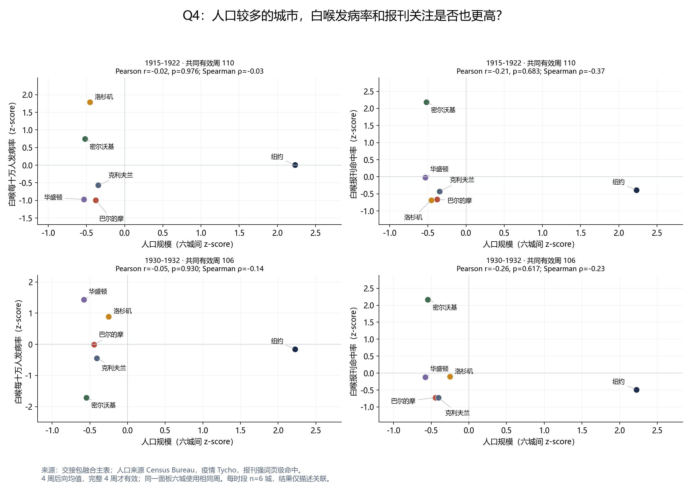
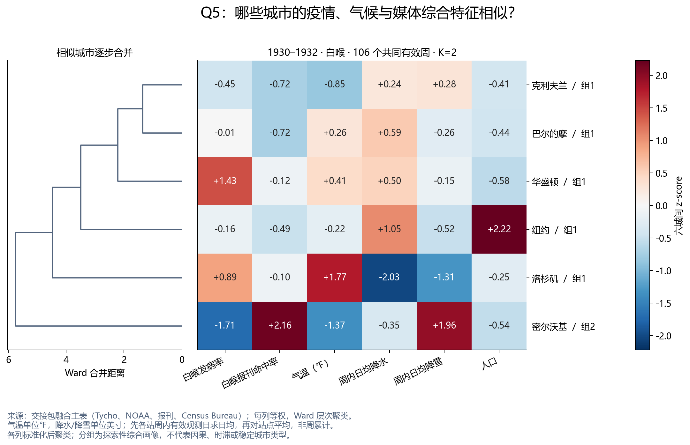

组员 D：城市差异与城市综合特征聚类
初版日期：2026-10-28；气象口径更新：2026-10-29。研究对象为六城；主分析为1930–1932年白喉。完整代码、输入快照与数值结果随包交付。
选择白喉是因为覆盖率更高，而非根据相关结果挑选病种。主分析不代表全部疾病。气象口径已据2026-10-29用户转述的答复补充：气温为℉，降水、降雪为英寸；prcp_sum和snow_sum为各站周内有效观测日的日均值再对站点取平均，不是周累计量。Q5仍为六城小样本的探索性分析。
Q4：人口规模能否解释城市差异？
将各城市白喉每十万人发病率、报刊命中率做4周后向均值，保留完整4周；再筛选六城共同有效周，按城市等周权求均值。人口取同一批周的均值。主时段有 106 个共同周，1915–1922对照时段有 110 个共同周。z-score在每个时段的六城汇总值之间、逐列计算（总体标准差ddof=0），不在每个城市内部先标准化。

人口与白喉发病率：Pearson r=-0.047，p=0.930；Spearman ρ=-0.143，p=0.787。方向一致，但仍需结合六城样本量和逐城剔除结果解读。两种检验均未达到p<0.05，本样本未提供人口规模与该指标显著关联的证据；这不等于证明人口没有影响。
人口与白喉报刊命中率：Pearson r=-0.261，p=0.617；Spearman ρ=-0.232，p=0.658。方向一致，但仍需结合六城样本量和逐城剔除结果解读。两种检验均未达到p<0.05，本样本未提供人口规模与该指标显著关联的证据；这不等于证明人口没有影响。
上述检验每次仅6个城市，p值为未经多重比较校正的探索性数值。不能把一座城市的每周观测当作数百个独立城市样本。没有年龄、收入或职业结构，无法检验社会结构机制；人口同时用于发病率分母，关联解释还需考虑这一数学关系。
两时段结果可能不同，应分别陈述。报刊命中率均值表示“典型有效周”的关注比例，不等于全部命中页之和除以全部扫描页之和。
| window |
metric |
n_cities |
pearson_r |
pearson_p |
spearman_r |
spearman_p |
| 1915-1922 |
diph_rate_per100k |
6 |
-0.0159 |
0.9762 |
-0.0286 |
0.9572 |
| 1915-1922 |
np_diph_rate |
6 |
-0.2146 |
0.6831 |
-0.3714 |
0.4685 |
| 1930-1932 |
diph_rate_per100k |
6 |
-0.0470 |
0.9295 |
-0.1429 |
0.7872 |
| 1930-1932 |
np_diph_rate |
6 |
-0.2610 |
0.6174 |
-0.2319 |
0.6584 |
主时段原始单位汇总（发病率：每十万人；命中率：%；人口：人）
| city |
population |
diph_rate_per100k |
np_diph_rate |
| BALTIMORE |
808864.3302 |
1.1819 |
0.0000 |
| CLEVELAND |
898803.3302 |
1.0117 |
0.0000 |
| LOS ANGELES |
1257638.5094 |
1.5344 |
0.3147 |
| MILWAUKEE |
578927.6321 |
0.5172 |
1.4679 |
| NEW YORK |
6969044.9623 |
1.1251 |
0.1169 |
| WASHINGTON |
499836.1321 |
1.7462 |
0.3081 |
Q5：哪些城市的综合特征相似？
使用同一时段 106 个六城共同有效周。六项特征分别是白喉发病率、白喉报刊命中率、气温（℉）、周内日均降水（英寸）、周内日均降雪（英寸）和人口在共同周上的时段均值；前两项先平滑。降水、降雪先在每个站点内按该周有效观测日求日均，再对站点取平均，因此不能将这两个_sum字段解释为周累计；若各站有效天数不同，也不等同于合并所有站点日记录统一求均值。逐列z-score后使用欧氏距离和Ward层次聚类。六项特征等权，因此气象占3/6维，领域权重并不相等。

仅比较 K=2 和 K=3，选择轮廓系数较高者（并列优先较小K）。本次 K=2，轮廓系数=0.316。小样本下这个选择不证明真实类别数；单城一组要视作异常画像而非稳定类型。
| k |
silhouette |
group_sizes |
| 2 |
0.3164 |
5/1 |
| 3 |
0.2325 |
4/1/1 |
组 1：巴尔的摩、克利夫兰、洛杉矶、纽约、华盛顿。相对偏高：白喉发病率（平均 z=0.34）；相对偏低：白喉报刊命中率（平均 z=-0.43）。
组 2：密尔沃基。相对偏高：白喉报刊命中率（平均 z=2.16）；相对偏低：白喉发病率（平均 z=-1.71）。
这里只比较平均水平，没有把时滞、事件响应或季节曲线纳入特征，故不将结果解释为严格的“响应机制类型”。
稳健性对照
保持主分析K不变，改变平滑、每周最低扫描页数（1→10）、删除人口、删除气象、逐项删除特征。ARI=1表示分组相同，越小表示越不一致。最低ARI=-0.200。每周10页是分析者提出的对照阈值，不是小组已拍板规则。
| variant |
n_common_weeks |
k |
silhouette |
ari_vs_main |
labels |
status |
| 不做4周平滑 |
123 |
2 |
0.3089 |
1.0000 |
1/1/1/2/1/1 |
已执行 |
| 每周至少10页 |
0 |
2 |
NaN |
NaN |
|
共同有效周不足：0 |
| 排除人口 |
106 |
2 |
0.4072 |
1.0000 |
1/1/1/2/1/1 |
已执行 |
| 排除气象 |
106 |
2 |
0.4099 |
1.0000 |
1/1/1/2/1/1 |
已执行 |
| 去掉_diph_rate_per100k |
106 |
2 |
0.3160 |
1.0000 |
1/1/1/2/1/1 |
已执行 |
| 去掉_np_diph_rate |
106 |
2 |
0.2493 |
-0.2000 |
1/1/2/1/1/1 |
已执行 |
| 去掉_tavg_avg |
106 |
2 |
0.3414 |
1.0000 |
1/1/1/2/1/1 |
已执行 |
| 去掉_prcp_sum |
106 |
2 |
0.3802 |
1.0000 |
1/1/1/2/1/1 |
已执行 |
| 去掉_snow_sum |
106 |
2 |
0.2627 |
1.0000 |
1/1/1/2/1/1 |
已执行 |
| 去掉_population |
106 |
2 |
0.4072 |
1.0000 |
1/1/1/2/1/1 |
已执行 |
口径、来源与局限
- 所有缺失保留NA，不补0。病例真实0值保留。报刊无覆盖时命中率为NA。
- 严格按每年周日序列重建周历；两研究窗口分别处理，不跨1922–1930断档滚动。
- 共同周筛选改善可比性，但仍可能偏向记录更完整的季节，不能推断为完整年度负担；详见 common_week_seasons.csv。
- 所有流感扩展分析应排除1915–1919；本报告不做流感定量推断。
- 人口来自普查年线性插值，边界未统一；NHGIS提供1930点位，不提供本包所用人口数字。
- 气象单位与周表口径已据用户转述的答复确认，记录见inputs/气象口径确认.md。原字段名保持兼容，prcp_sum与snow_sum的sum不表示周累计；本次未将其乘7或改造成累计量。气温保留℉、降水降雪保留英寸，标准化输入数值不变。
- 本分析不重新清洗NOAA、不验证站点归属；PDF原表的负责人手工复核状态也不被改写为完成。
交付索引
人口与点位源卡 · 分析口径与待核对事项 · 自动核验结果 · Q4相关表 · Q5对照表